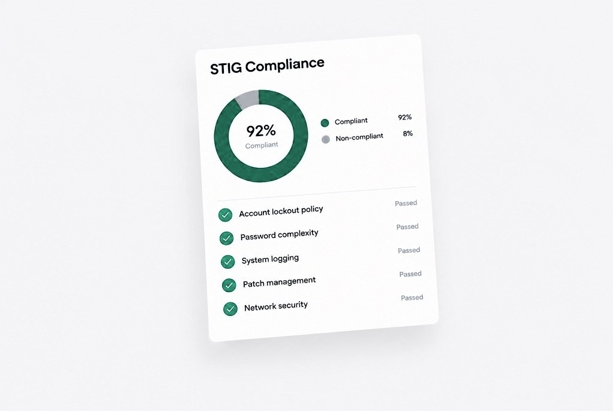

The problem
STIG compliance reporting meant reviewing 100+ CKL checklist files by hand, a job that took days.
What I built
A PowerShell pipeline that parses and evaluates every CKL file and produces the compliance report automatically.
Where it stands
Deployed in production at DLA. The review that took days now comes out of one run, and the compliance deliverables are more accurate.